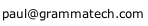

Call For Tool Papers
The requirements for tools papers this year are different from previous years tool demo papers. This section aims to clarify the submission and acceptance criteria.The key aspects are:
- A tool paper is neither like a demo paper, nor like a research paper.
- It aptly and accurately describes a tool,
- motivates its existence well (and related to what came before),
- describes its architecture and
- explains its inner workings,
- and most importantly of all its most appealing use cases.
Note that the submission length has been expanded to a maximum of ten pages, increased from the two pages expected for tools demos in previous years. This gives authors enough space to discuss use cases and tool design in much more detail than was possible before. A demo scenario with screenshots and information about the tool availability can also be included.
The key criterion for acceptance is that the paper should make an original contribution that can benefit others engaged in designing and building tools for source code analysis and manipulation. The tool need not be entirely ready for deployment.
Authors are encouraged to reference supporting resources, including video demos of their tool, and reviewers may take this information into account as they review the paper. However, such materials will not become part of the permanent record of the conference, so the paper should stand on its own. In order to preserve reviewer anonymity, such materials should be hosted on an anonymous public source (e.g., youtube), or made available in such a way that the tools chair can download once and redistribute to reviewers. If authors would like to inform reviewers of additional information that does not appear in the paper, such information can be emailed to the Tools Chair Paul Anderson.

The presentation of the paper will be the same as for the regular papers: a 15 minute slot of which 5 minutes will be for questions, followed by an open discussion time at the end of the session. The presenter is encouraged to use the presentation time to give a live demonstration of the tool.
The electronic portal for web submission is at:
http://www.easychair.org/conferences/?conf=scam2011